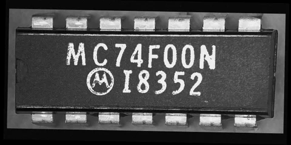
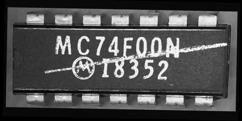

Scratch
Intermittent contact creates an irregular bright trace with changing width, density, and texture.
Embedded Machine Learning Laboratory · UT Dallas
Defects by design.
Labels by construction.
A synthetic image dataset of defective integrated circuit markings generated by physics-informed guidelines.
University of Texas at Dallas


The motivation
Start with a defect-free IC image. Model what causes a defect. Keep the rendering parameters and generated labels together.
The physics-informed guidelines distinguish damage to the package surface from changes to the marking itself. Scratch, contamination, missing text, smeared text, and their combinations are generated with labels taken directly from the renderer.
Read the evidence and its limitsPhysics-informed guidelines
Follow the decisions that connect the source image, physical cause, rendered appearance, and annotation.
Intermittent contact creates an irregular bright trace with changing width, density, and texture.
Deposited and partly wiped residue forms textured patches, fragments, and satellite droplets.
Insufficient marking energy removes portions of existing character strokes.
Defocus, melting, or ink spread widens and redistributes the photographed marking.
These are cause-derived image-formation approximations, not first-principles material or optical simulations.
Look closer
A dataset you can trace
Images in a capture group share the same defect-free rendering. This keeps the comparison controlled and the annotations tied to the changes.
| Image class | Images | Instances |
|---|
“Combined” is an image-level class. Its component defects retain their own types, masks, polygons, and boxes.
Keep each capture group within one subset. Both protocols concern the openly licensed sources, not the real evaluation data.
Evidence, with its boundaries
Distribution similarity, recognition by a rule-based inspector, and transfer to the real IC marking dataset of [1] answer different questions.
Scratch results are mixed across measures. Contamination has lower point estimates than patch blending on most measures.
Small reference populations and calibration overlap limit the conclusion. Sensitivity ranges do not establish equivalence.
Paper §5.1 · Table 7Recognition of synthetic images is not the same as prospective factory performance.
Paper §5.2Mean over training seeds, full release, product-matched protocol, at the reported false-alarm-constrained operating point.
That operating point and the training-protocol choice used the real evaluation images.
Paper §4.5 · Table 8Values are extracted from the manuscript table. The fixed-confidence columns are shown alongside the retrospectively selected operating point; false alarms must be read with detection counts.
The evidence concerns one IC package and one imaging setup. Missing-text, smeared-text, and combined classes have only indirect or synthetic checks. These results are not a claim of production-line readiness.
Understand the files
The identifier links the image, defect masks, bounding boxes, polygons, capture group, and generation record.
These paths use the uploaded archive layout. Standard image and box-label discovery has been checked for both image views and split protocols.
Research access · Restricted archives
The dataset and companion generator are deposited in a published Zenodo record. The record is public; both archives remain restricted and are available on approved request.
View the Zenodo record. Contact the authors below to request access; approval and file delivery are handled separately.
Request access by emailOpens your email app. Nothing is submitted automatically.
Full images and face crops, renderer masks, box and polygon labels, split definitions, source attribution, and clean counterparts.
Prepared sources, generation modules, frozen parameters, validation tools, and examples. MIT-licensed code; image licenses remain separate.
These SHA-256 values identify the uploaded copies.
How to request access
Requests are reviewed by the authors. Access is not automatic. The license and attribution requirements for each component are stated in its archive.
Institutional contact: . Corresponding author: kehtar@utdallas.edu.
Renderer masks are not guaranteed to contain every changed pixel. Exact reproduction depends on the documented software versions and numerical compatibility settings. Windows full-release checks and an Ubuntu small-sample check are documented in the generator archive; other platforms remain unverified. Read both archive READMEs and the tested-platforms document. This release is not evidence of factory readiness.
Reference this work
Manuscript under review at Electronics (MDPI).
The manuscript citation is provisional. The published dataset DOI appears in the access section and is not a published-paper DOI.
Per-image attribution links every synthetic example to its openly licensed source.
Labels and generation records are documented separately from source-image rights.
The generator code is MIT-licensed. Prepared source images retain their own image-license and attribution requirements.
| Source | Author | Original license | Modifications |
|---|